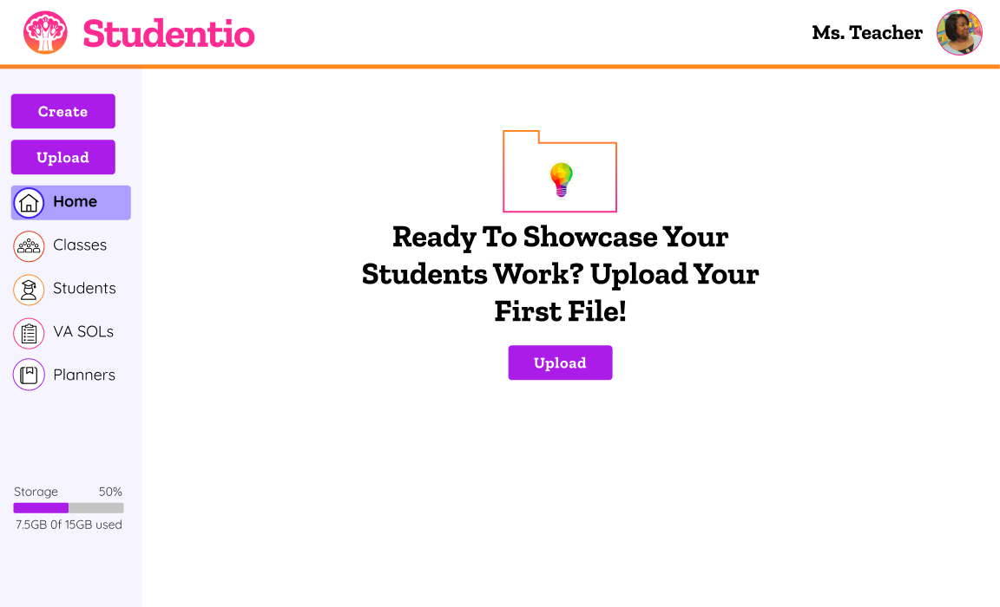
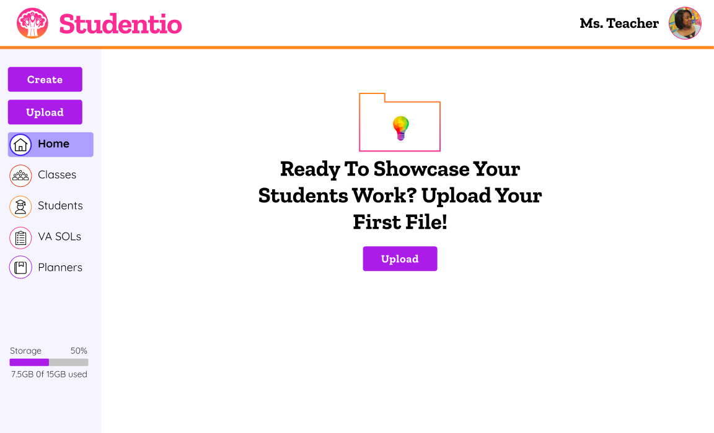

Studentio
Cloud storage for educators to upload and create documents for their classes, as well as share content with other teachers and with students’ families.
Overview
Roles
- UX designer
- UI Designer
- Research
- Brand Identity Creator
Deliverables
- User Surveys
- Competitive Analysis
- User Personas
- User Stories
- User Flows
- Wireframes
- Usability Testing
- Prototypes
- High Fidelity Mockups
Tools
- Google Forms
- Draw.io
- Whimsical
- Figma
- InVision
- Usability Hub
- Zoom
- Slack
Problem
Teachers need to create and collect assessments and projects in the classroom, share with teachers, students, and parents, and organize content into multiple folders at once.
Solution
I created Studentio, an education focused cloud storage service. For the MVP, I decided to focus on the interface for teachers, where they could upload, create, and organize content to share with students and families.
For my competitive analysis I focused on Google Drive, Pinterest, and Dropbox. All three had strengths that they were free to use, with Drive and Dropbox offering paid storage solutions for those that exceed the free plan. A common strength was that the platforms made documents accessible across many devices. Common weaknesses were issues dealing with security and privacy, compatibility with older programs such a MS Office, and limited free storage.
A new player in this field should be able to provide security for their users, a free storage option, and cross-device compatibility.
92%
Use document creating and editing the most
58%
Use social sharing the least
72%
Prefer link or email sharing
I crafted a survey that asked users what their needs were for cloud storage. I wanted to see what features they found essential, and which features they utilized the least. Since the client wanted collaborative features, I also asked how users preferred to collaborate, to find out what methods were most popular, and if social sharing was important to users. File uploading and document editing were the clear winners in terms of frequency of use, and social sharing and saving items found on the web were not important features with users. This research helped me narrow down the scope and focus on essential features for users: file uploading, document editing, and sharing through email and links. A niche audience identified was educators.
Heather
Collaborative Organizer
40, Female
Teacher | Falls Church, VA
{kind=link}
Motivations
To create documents and upload lessons she finds online. She shares and receives shared content from other teachers and administrators as well.
Goals
- Upload student work to create an “online portfolio”
- Organize each student’s work and share their work with the students’ parents
- Students comment and/or reflect on their learning and their work
Frustrations
- Time! If it take too much time in an already packed day, it’s not going to work.
- Ease of use - ideally students would take some ownership for the upload of their work so that she can delegate the tasks to students.
"I want an efficient way to write and share lesson plans."

Lesley
Connected Parent
45, Female
Lawyer | Washington, DC
{kind=link}
Motivations
She’d love a product that would put her in the same contact with her children as she has with her clients and coworkers through a collaborate cloud storage platform.
Goals
- Lesley would love to have a better idea of what her twins’ days look like.
- To find out how her children are progressing in their studies.
- Having a meaningful connection with their classrooms would mean the world to her.
Frustrations
- worksheets that come home without insight into the lesson or what her children learned.
- She wants a quicker, more responsive way to see her child’s work.
"I want to see what my sons are completing in school more often."
Based on the survey, competitive analysis, and user personas, I created a list of the top high-priority user stories to include in the project.
- Upload a file
- Create content
- Edit content
- Sharing items
- Sign in to account
- Create new account
- Organize content into folders or with tags
I created my user flows to meet the needs of the high priority user stories. After feedback, I made sure to include the details to the landing page, including what would happen if a user entered an incorrect password or forgot their password, and allowing for a social login such as using Facebook. I also included the modes of sharing most desired by users, email and link sharing.
I wanted to use a format that would already be familiar to users, like Dropbox or Drive. I also wanted to keep the layout as minimal as possible, to reduce visual clutter and make it feel clean and organized. I also wanted to keep it simple knowing that further iterations of the design would be used with young children, and I Wanted to keep navigation easy for the youngest users.
After initially sketching on paper, I created wireframes for the essential user flows.

I tested three users with the wireframe prototypes. All users mentioned how large the text was, and that I’d need to scale back the font size. The testers didn’t have any trouble going through the sign up/in process, and creating a document, but all stumbled when I asked them to tag a document. The tag logo I had (shown below) did not have a button or text to differentiate it, so I knew I’d have to add that for the high-fidelity mockups.
Efficient
Organized
Celebratory
Collaborative
For my branding work, I researched other educational technology platforms are referred back to the feedback from my survey and user testing. In my survey, users identified clean, sleek, and minimal designs as a plus. In my testing, users identified my wireframe text and buttons as too large. Therefore I wanted to create a brand that was sleek, minimal, and with a sizing hierarchy. I also wanted to keep the design bright, as many educational platforms use bright, fun colors.

Logo progression: I wanted an active, celebratory logo that signified student growth and success. At first I focused on cloud, lightbulb and brain visualizations, but after mentor feedback and other educational technology logo research, I decided to focus on images of celebrating children and trees that signify growth. After sketching, my design continued to evolve to be more dynamic and refined.

After doing preference testing, the following logo was chosen by a large margin as the favorite:
After testing my mockups, I received feedback that the logo was too small to read the details. Therefore I increased the size of the tree within the circle and thickened the stroke of the lines of the canopy of the tree.
Feedback on my first design was that it was outdated, and lacked high-quality finish. After researching other popular landing pages, I changed mine to be more colorful and follow best practices (second image). I submitted the new work to the DDC and Slack, and got lots of great feedback on how to improve it. The major feedback was to let the design “breathe” by adding more white space, eliminating the orange dividing line at top, reducing font and image sizes, and putting the gradient at the bottom (instead of the middle of the page) with a small section of gradient at top to tie it together. I also changed the sign in page based on preference testing results to have a more engaging visual:

 

Finally, I changed the tag option to be more explicit, which was a pain point when testing my wireframes. This change made the tagging and organizing tasks much easier for users to navigate when testing the high fidelity mockups:

I also got feedback that it was unclear which page the user was on when in the file view. Therefore I added a “home” screen and highlighted the active screen with a button to let the user know where they were navigating to. I also updated the buttons to match the buttons used in my style guide and elsewhere in the app.


I conducted several user tests of my high-fidelity mockup. Overall the response was very positive. I was excited that two of the users were able to navigate easily and also understood the organizational tools. I was also appreciative of the critical feedback from a less tech-savvy teacher. It helped me to understand that not everything I take for granted as simple will be understood by all users, and that I need to be explicitly literal in the copy I use on the page. I was also intrigued by the idea that the hero image was not organized, and didn’t match with the stated product goal in the copy. Therefore in my final version, I changed terminology of the tabs to match the terminology of the district that would use the product. I also simplified the vector image on the landing page to signify the organization the product offers. After testing a few options, a new, simpler vector image won in a preference test asking users to choose the image that best represented organization and efficiency. I also changed all the text to black based on user feedback to reduce the brightness. My testing results are below:
- Submitting work to the DDC and getting feedback from Slack and my mentors was hugely influential on improving my design. I also loved getting the quick feedback from preference tests to make changes to my design based on user feedback.
- My weakness is visual design, so it took a lot of time, feedback, and testing to get the design to a place where I was satisfied.
- My doubts going into the project were not knowing where to focus because the client brief was so broad. Luckily the user survey helped me narrow down the focus.
- The biggest surprise was with the logo choice by users. The one I liked was not chosen by users.
- Although I spent a great deal of time on it, if I had more time I’d like to continue toying with the landing page. I also would like to refine the navigation bar buttons for the active screen.
- I learned so much during the process, especially how to seek and respond to user feedback. I also felt my visual aesthetic improved with design critiques.
- My biggest takeaway for future projects is to regularly submit work to the DDC and Slack to help myself grow as a designer! Critiques from fellow designers have been eye opening and immensely helpful.